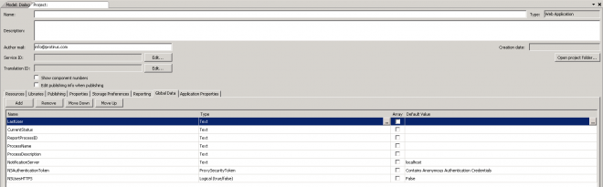

In this Article I'm going to explain how to create a Global variable and add it to the Project when a Component is added into Workflow.
- List
- Setup
- Simple Component
- Deploy
- Help File
- Logging
- Inputs
- Inspecting other Components
- Creating Globals (this)
- Creating Project Properties
- Working with SQL
- Working with a Web Service
Set up a component how you would usually. The difference here is you can set information at a Project level.
I've implemented this in a component to get and set a Workflow Connection String.
You may have seen this when you add the Create SMP Credentials, this is what I used as a basis
Symantec.Components.Platform.dll
namespace Symantec.Workflow.Components.Platform
public class InitializeWorkflowSettings

So we need a reference to the Project.
AbstractOrchestrationProject project = CurrentProjectHolder.GetInstance().Project;
When you add the Component to the Project you can set a Default value.
Give the data a name - here I've called mine "ConnectionString".
public WorkflowSQLConnectionString()
{
if (!DesignMode.IsInDesignMode)
return;
AbstractOrchestrationProject project = CurrentProjectHolder.GetInstance().Project;
if (project == null || project.GlobalData == null)
return;
if (project.GlobalData.Data["ConnectionString"] == null)
{
project.GlobalData.Data.Add(new DataDefinition("ConnectionString", typeof(string)));
//project.GlobalData.Data["ConnectionString"].DefaultValue = (object)"Data Source=SERVER;Initial Catalog=ProcessManager;Integrated Security=True;Pooling=True;Connect Timeout=30";
project.GlobalData.Data["ConnectionString"].DefaultValue = @"";
}
}
Finally in your Run method you can set this value.
public override void Run(IData data)
{
...
data["[Global].ConnectionString"] = connectionString;
...
}
This means you can now use the Global variable throughout your Workflow.
Usually I use a Profile Property (Application Property) in Process Manager instead of Globals/Project Properties as then you can update the values if you move the Projects between Servers/Environments but this way means it looks locally on the box and no need to update it anywhere else.